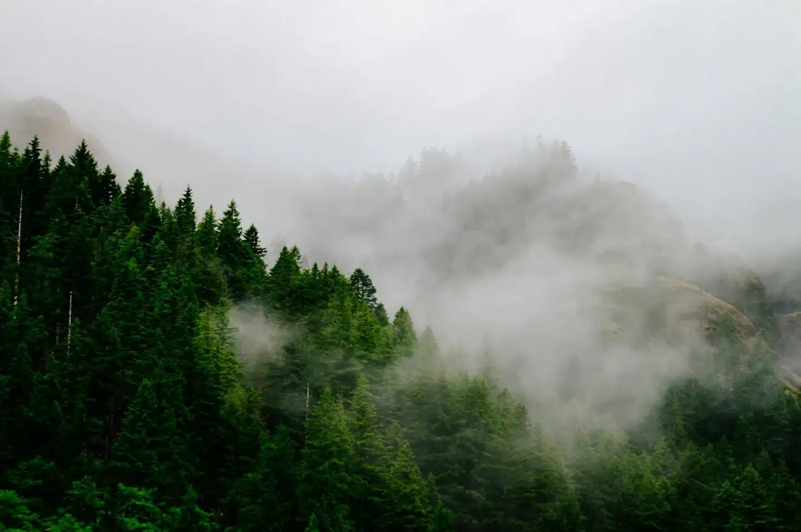
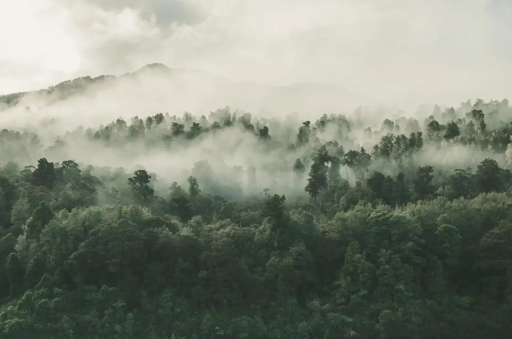
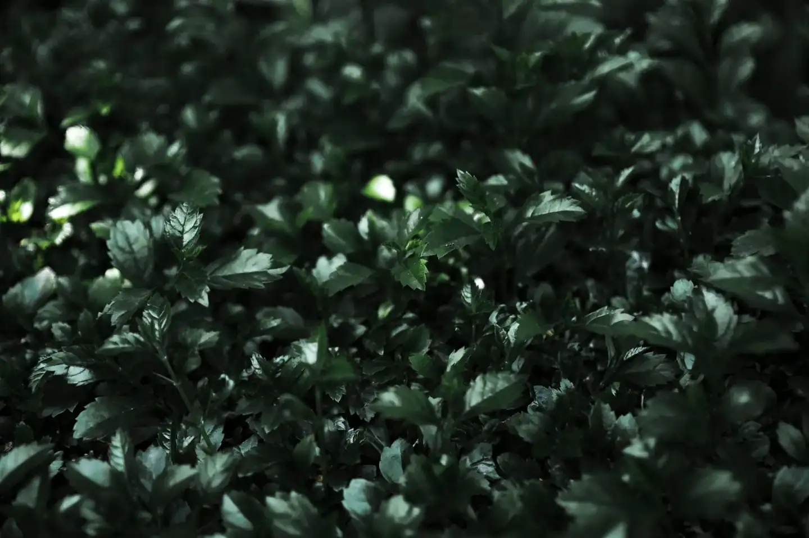
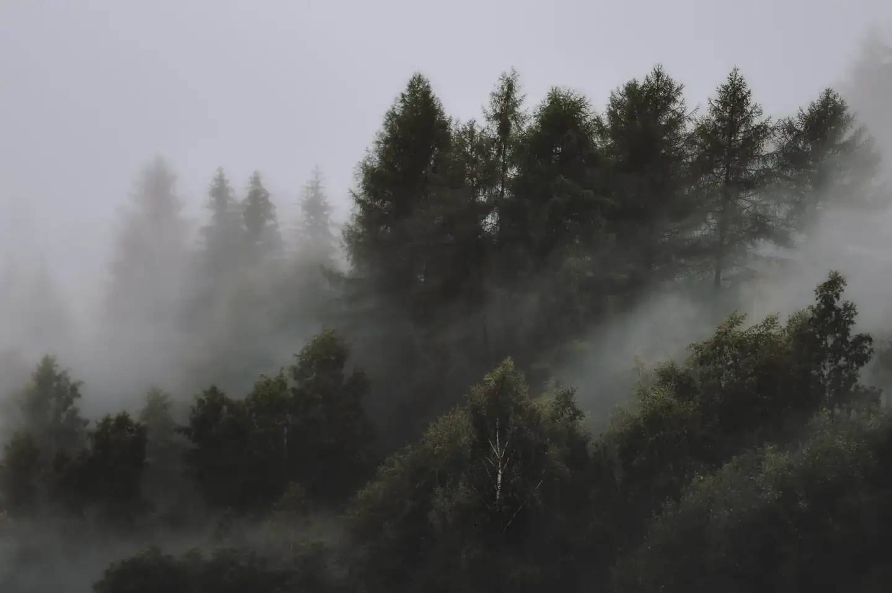
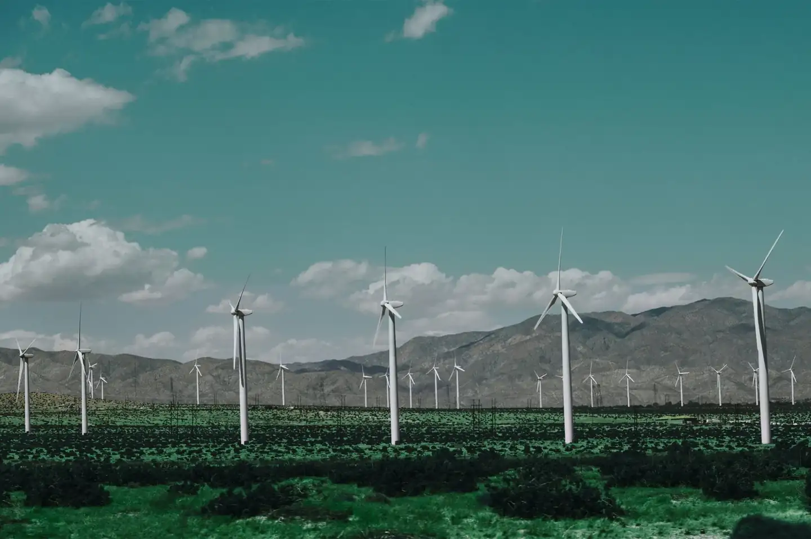
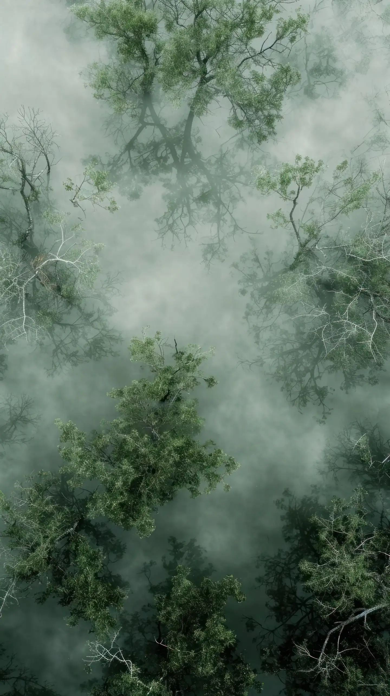

Articles & news
Explainers on IFRS, ISSB and carbon, plus news and events from the LO-CARB team.

9 posts

LO-CARB welcomes partners and guests at its sustainability event
News & events
Event
14 Oct 2026
LO-CARB welcomed partners and guests to share its sustainability work and plans.
→What IFRS S2 means for SET-listed companies
Knowledge base
IFRS
2 Oct 2026
What listed companies need to prepare for climate-related disclosures under IFRS S2, explained in plain language.
→Highlights from LO-CARB’s partner event
News & events
Event
14 Oct 2026
A look back at the moments and conversations from LO-CARB’s partner event.
→
IFRS S1 vs S2: what each standard asks for
Knowledge base
IFRS
12 Sep 2026
A side-by-side look at the general requirements of IFRS S1 and the climate disclosures in IFRS S2.
→
ISSB for Boards workshop returns to Bangkok on 21 Nov
News & events
ISSB
5 Sep 2026
Details of the ISSB for Boards workshop, returning to Bangkok on 21 November.
→
Scope 1, 2 and 3 emissions explained
Knowledge base
CarbonCal
22 Aug 2026
What counts as Scope 1, 2 and 3 emissions, and why the difference matters.
→LO-CARB and a farming cooperative team up on farmland carbon
News & events
Carbon Scout
1 Aug 2026
LO-CARB and a farming cooperative begin working together on carbon in agricultural land.
→
How to start collecting Scope 3 supplier data
Knowledge base
CarbonCal
25 Jul 2026
Practical first steps for gathering Scope 3 data from your suppliers.
→Talk to us about a project like these
Tell us your goal and we will point you to the right solution.
บทความ และข่าวสาร
บทความอธิบาย IFRS, ISSB และคาร์บอน พร้อมข่าวสารและกิจกรรมจากทีมโล-คาร์บ
9 บทความ
LO-CARB ต้อนรับพันธมิตรและแขกรับเชิญในงานด้านความยั่งยืน
ข่าวและกิจกรรม
กิจกรรม
14 ต.ค. 2569
LO-CARB ต้อนรับพันธมิตรและแขกรับเชิญ เพื่อแบ่งปันผลงานและแผนงานด้านความยั่งยืน
→IFRS S2 สำคัญอย่างไรกับบริษัทจดทะเบียนใน SET
คลังความรู้
IFRS
2 ต.ค. 2569
สรุปสิ่งที่บริษัทจดทะเบียนต้องเตรียมสำหรับการเปิดเผยข้อมูลด้านสภาพภูมิอากาศตาม IFRS S2 แบบเข้าใจง่าย
→ไฮไลต์จากงานพบปะพันธมิตรของ LO-CARB
ข่าวและกิจกรรม
กิจกรรม
14 ต.ค. 2569
ย้อนชมบรรยากาศและบทสนทนาจากงานพบปะพันธมิตรของ LO-CARB
→IFRS S1 กับ S2: แต่ละมาตรฐานกำหนดอะไรบ้าง
คลังความรู้
IFRS
12 ก.ย. 2569
เปรียบเทียบข้อกำหนดทั่วไปของ IFRS S1 กับการเปิดเผยข้อมูลด้านสภาพภูมิอากาศตาม IFRS S2
→เวิร์กช็อป ISSB สำหรับกรรมการ กลับมาที่กรุงเทพฯ 21 พ.ย.
ข่าวและกิจกรรม
ISSB
5 ก.ย. 2569
รายละเอียดเวิร์กช็อป ISSB สำหรับกรรมการ ที่กลับมาจัดที่กรุงเทพฯ วันที่ 21 พ.ย.
→อธิบายการปล่อย Scope 1, 2 และ 3
คลังความรู้
CarbonCal
22 ส.ค. 2569
การปล่อย Scope 1, 2 และ 3 คืออะไร และทำไมการแยกประเภทจึงสำคัญ
→LO-CARB จับมือสหกรณ์การเกษตร ด้านคาร์บอนในพื้นที่เกษตร
ข่าวและกิจกรรม
Carbon Scout
1 ส.ค. 2569
LO-CARB ร่วมมือกับสหกรณ์การเกษตร ในงานด้านคาร์บอนในพื้นที่เกษตร
→เริ่มเก็บข้อมูล Scope 3 จากซัพพลายเออร์อย่างไร
คลังความรู้
CarbonCal
25 ก.ค. 2569
ขั้นตอนเริ่มต้นในการเก็บข้อมูล Scope 3 จากซัพพลายเออร์
→คุยกับเราเรื่องโปรเจกต์ แบบนี้
บอกเป้าหมายของคุณ แล้วเราจะแนะนำโซลูชันที่เหมาะสม